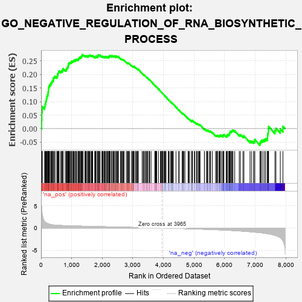
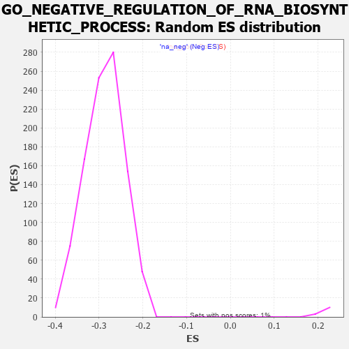

| | | Dataset | 7d |
| Phenotype | NoPhenotypeAvailable |
| Upregulated in class | na_pos |
| GeneSet | GO_NEGATIVE_REGULATION_OF_RNA_BIOSYNTHETIC_PROCESS |
| Enrichment Score (ES) | 0.27303883 |
| Normalized Enrichment Score (NES) | 1.2374339 |
| Nominal p-value | 0.0 |
| FDR q-value | 0.45277682 |
| FWER p-Value | 1.0 |
Table: GSEA Results Summary

Fig 1: Enrichment plot: GO_NEGATIVE_REGULATION_OF_RNA_BIOSYNTHETIC_PROCESS
Profile of the Running ES Score & Positions of GeneSet Members on the Rank Ordered List
| PROBE | GENE SYMBOL | GENE_TITLE | RANK IN GENE LIST | RANK METRIC SCORE | RUNNING ES | CORE ENRICHMENT | | 1 | H2AX | | | 20 | 4.738 | 0.0321 | Yes |
| 2 | HMX1 | | | 27 | 3.885 | 0.0597 | Yes |
| 3 | SIX2 | | | 40 | 3.152 | 0.0812 | Yes |
| 4 | EMX2 | | | 117 | 1.451 | 0.0819 | Yes |
| 5 | SP3 | | | 131 | 1.391 | 0.0904 | Yes |
| 6 | OLIG3 | | | 149 | 1.268 | 0.0975 | Yes |
| 7 | SPI1 | | | 162 | 1.182 | 0.1046 | Yes |
| 8 | FOXF1 | | | 176 | 1.136 | 0.1112 | Yes |
| 9 | RORB | | | 189 | 1.097 | 0.1177 | Yes |
| 10 | BCL3 | | | 202 | 1.047 | 0.1238 | Yes |
| 11 | E2F5 | | | 225 | 0.992 | 0.1282 | Yes |
| 12 | SMAD5 | | | 231 | 0.979 | 0.1347 | Yes |
| 13 | CDC45 | | | 239 | 0.950 | 0.1407 | Yes |
| 14 | NFX1 | | | 242 | 0.949 | 0.1474 | Yes |
| 15 | INSM1 | | | 250 | 0.939 | 0.1534 | Yes |
| 16 | TBX20 | | | 267 | 0.880 | 0.1577 | Yes |
| 17 | SOX14 | | | 278 | 0.859 | 0.1627 | Yes |
| 18 | KLF11 | | | 318 | 0.788 | 0.1634 | Yes |
| 19 | ARX | | | 322 | 0.782 | 0.1687 | Yes |
| 20 | CNOT7 | | | 348 | 0.750 | 0.1710 | Yes |
| 21 | GLIS3 | | | 358 | 0.738 | 0.1752 | Yes |
| 22 | SOX13 | | | 380 | 0.717 | 0.1777 | Yes |
| 23 | RRP8 | | | 403 | 0.699 | 0.1799 | Yes |
| 24 | H2AJ | | | 404 | 0.697 | 0.1850 | Yes |
| 25 | EED | | | 409 | 0.690 | 0.1896 | Yes |
| 26 | SUFU | | | 443 | 0.665 | 0.1901 | Yes |
| 27 | HAT1 | | | 454 | 0.659 | 0.1937 | Yes |
| 28 | CNOT2 | | | 514 | 0.625 | 0.1905 | Yes |
| 29 | PHF12 | | | 533 | 0.619 | 0.1927 | Yes |
| 30 | NR1I3 | | | 539 | 0.615 | 0.1966 | Yes |
| 31 | SRF | | | 542 | 0.615 | 0.2008 | Yes |
| 32 | ORC2 | | | 550 | 0.613 | 0.2044 | Yes |
| 33 | HIRA | | | 568 | 0.608 | 0.2066 | Yes |
| 34 | APEX1 | | | 577 | 0.604 | 0.2100 | Yes |
| 35 | ALX1 | | | 590 | 0.598 | 0.2128 | Yes |
| 36 | NOC2L | | | 647 | 0.578 | 0.2097 | Yes |
| 37 | HES5 | | | 661 | 0.571 | 0.2122 | Yes |
| 38 | XRCC6 | | | 694 | 0.560 | 0.2121 | Yes |
| 39 | FST | | | 698 | 0.560 | 0.2158 | Yes |
| 40 | IKZF5 | | | 716 | 0.555 | 0.2177 | Yes |
| 41 | ID1 | | | 719 | 0.555 | 0.2215 | Yes |
| 42 | RERE | | | 787 | 0.536 | 0.2167 | Yes |
| 43 | RFX5 | | | 823 | 0.525 | 0.2160 | Yes |
| 44 | LDB2 | | | 831 | 0.523 | 0.2189 | Yes |
| 45 | PHF10 | | | 834 | 0.523 | 0.2224 | Yes |
| 46 | SAP18 | | | 850 | 0.519 | 0.2243 | Yes |
| 47 | IGBP1 | | | 869 | 0.514 | 0.2257 | Yes |
| 48 | HDAC8 | | | 881 | 0.510 | 0.2280 | Yes |
| 49 | NELFA | | | 883 | 0.510 | 0.2316 | Yes |
| 50 | HMGB2 | | | 892 | 0.507 | 0.2343 | Yes |
| 51 | HDAC5 | | | 900 | 0.506 | 0.2371 | Yes |
| 52 | HCFC1 | | | 902 | 0.506 | 0.2406 | Yes |
| 53 | BTAF1 | | | 915 | 0.504 | 0.2428 | Yes |
| 54 | PDCD4 | | | 941 | 0.497 | 0.2431 | Yes |
| 55 | CTR9 | | | 964 | 0.492 | 0.2439 | Yes |
| 56 | TAF3 | | | 988 | 0.486 | 0.2444 | Yes |
| 57 | DEDD2 | | | 999 | 0.484 | 0.2467 | Yes |
| 58 | MEN1 | | | 1003 | 0.483 | 0.2498 | Yes |
| 59 | YAP1 | | | 1041 | 0.475 | 0.2485 | Yes |
| 60 | MEF2C | | | 1054 | 0.473 | 0.2504 | Yes |
| 61 | FOXK2 | | | 1081 | 0.467 | 0.2504 | Yes |
| 62 | LIN37 | | | 1086 | 0.467 | 0.2533 | Yes |
| 63 | SRC | | | 1128 | 0.459 | 0.2513 | Yes |
| 64 | NCK2 | | | 1131 | 0.458 | 0.2544 | Yes |
| 65 | EMX1 | | | 1143 | 0.455 | 0.2563 | Yes |
| 66 | RFX3 | | | 1171 | 0.451 | 0.2561 | Yes |
| 67 | RCOR1 | | | 1211 | 0.445 | 0.2542 | Yes |
| 68 | RBBP7 | | | 1220 | 0.443 | 0.2564 | Yes |
| 69 | KAT8 | | | 1231 | 0.442 | 0.2584 | Yes |
| 70 | KAT7 | | | 1240 | 0.440 | 0.2605 | Yes |
| 71 | NFIL3 | | | 1264 | 0.436 | 0.2607 | Yes |
| 72 | CDC73 | | | 1265 | 0.436 | 0.2639 | Yes |
| 73 | SCMH1 | | | 1300 | 0.428 | 0.2626 | Yes |
| 74 | AEBP2 | | | 1315 | 0.426 | 0.2639 | Yes |
| 75 | NRDE2 | | | 1320 | 0.425 | 0.2665 | Yes |
| 76 | UBR2 | | | 1334 | 0.423 | 0.2679 | Yes |
| 77 | NKAP | | | 1337 | 0.422 | 0.2707 | Yes |
| 78 | EAPP | | | 1344 | 0.421 | 0.2730 | Yes |
| 79 | FOXP4 | | | 1373 | 0.415 | 0.2724 | No |
| 80 | RBM10 | | | 1430 | 0.404 | 0.2681 | No |
| 81 | ASCL3 | | | 1453 | 0.399 | 0.2681 | No |
| 82 | DACH1 | | | 1471 | 0.395 | 0.2688 | No |
| 83 | E2F4 | | | 1501 | 0.390 | 0.2679 | No |
| 84 | NKRF | | | 1534 | 0.386 | 0.2665 | No |
| 85 | DPF3 | | | 1541 | 0.385 | 0.2686 | No |
| 86 | DCAF1 | | | 1559 | 0.381 | 0.2691 | No |
| 87 | FZD1 | | | 1574 | 0.379 | 0.2701 | No |
| 88 | PAF1 | | | 1588 | 0.376 | 0.2711 | No |
| 89 | KDM1B | | | 1618 | 0.371 | 0.2701 | No |
| 90 | RXRA | | | 1647 | 0.365 | 0.2691 | No |
| 91 | MAF1 | | | 1667 | 0.361 | 0.2693 | No |
| 92 | WWOX | | | 1688 | 0.359 | 0.2693 | No |
| 93 | RCOR2 | | | 1752 | 0.345 | 0.2636 | No |
| 94 | TLE4 | | | 1775 | 0.341 | 0.2632 | No |
| 95 | C1D | | | 1777 | 0.341 | 0.2656 | No |
| 96 | STRAP | | | 1793 | 0.339 | 0.2661 | No |
| 97 | FNIP1 | | | 1798 | 0.338 | 0.2681 | No |
| 98 | RTF1 | | | 1844 | 0.329 | 0.2646 | No |
| 99 | TCF7 | | | 1848 | 0.328 | 0.2666 | No |
| 100 | FOXK1 | | | 1859 | 0.326 | 0.2677 | No |
| 101 | SMAD4 | | | 1860 | 0.326 | 0.2701 | No |
| 102 | TLE3 | | | 1863 | 0.325 | 0.2722 | No |
| 103 | CUL3 | | | 1893 | 0.321 | 0.2708 | No |
| 104 | BCL7A | | | 1905 | 0.320 | 0.2717 | No |
| 105 | TASOR | | | 1931 | 0.316 | 0.2707 | No |
| 106 | CIC | | | 1988 | 0.307 | 0.2657 | No |
| 107 | FOXO4 | | | 2004 | 0.304 | 0.2659 | No |
| 108 | DMAP1 | | | 2025 | 0.301 | 0.2655 | No |
| 109 | PEX2 | | | 2056 | 0.298 | 0.2638 | No |
| 110 | MEIS2 | | | 2063 | 0.296 | 0.2652 | No |
| 111 | TAF7 | | | 2092 | 0.292 | 0.2637 | No |
| 112 | FOXD1 | | | 2093 | 0.292 | 0.2658 | No |
| 113 | BMP7 | | | 2107 | 0.290 | 0.2662 | No |
| 114 | ATOH8 | | | 2145 | 0.285 | 0.2635 | No |
| 115 | TBPL2 | | | 2150 | 0.285 | 0.2650 | No |
| 116 | MORC2 | | | 2171 | 0.281 | 0.2645 | No |
| 117 | C1QBP | | | 2189 | 0.278 | 0.2643 | No |
| 118 | TCF25 | | | 2213 | 0.275 | 0.2633 | No |
| 119 | CDK2 | | | 2226 | 0.272 | 0.2637 | No |
| 120 | BAZ2A | | | 2227 | 0.272 | 0.2657 | No |
| 121 | WTIP | | | 2228 | 0.272 | 0.2677 | No |
| 122 | CREB1 | | | 2243 | 0.269 | 0.2679 | No |
| 123 | CBX1 | | | 2244 | 0.269 | 0.2698 | No |
| 124 | PRDM5 | | | 2265 | 0.265 | 0.2692 | No |
| 125 | REST | | | 2308 | 0.259 | 0.2656 | No |
| 126 | PCBP3 | | | 2317 | 0.258 | 0.2664 | No |
| 127 | MED25 | | | 2320 | 0.257 | 0.2680 | No |
| 128 | SCRT1 | | | 2323 | 0.257 | 0.2697 | No |
| 129 | SIN3A | | | 2361 | 0.251 | 0.2667 | No |
| 130 | PPID | | | 2376 | 0.249 | 0.2667 | No |
| 131 | HIPK2 | | | 2389 | 0.247 | 0.2669 | No |
| 132 | LHX9 | | | 2393 | 0.247 | 0.2683 | No |
| 133 | UBA3 | | | 2440 | 0.238 | 0.2641 | No |
| 134 | MTA3 | | | 2443 | 0.237 | 0.2656 | No |
| 135 | KAT6A | | | 2444 | 0.237 | 0.2673 | No |
| 136 | KDM1A | | | 2447 | 0.237 | 0.2688 | No |
| 137 | ZC3H8 | | | 2486 | 0.229 | 0.2655 | No |
| 138 | SARNP | | | 2496 | 0.227 | 0.2660 | No |
| 139 | SALL4 | | | 2523 | 0.223 | 0.2642 | No |
| 140 | MBD3 | | | 2524 | 0.223 | 0.2659 | No |
| 141 | MLX | | | 2596 | 0.214 | 0.2582 | No |
| 142 | BAG3 | | | 2620 | 0.209 | 0.2567 | No |
| 143 | KAT5 | | | 2644 | 0.206 | 0.2552 | No |
| 144 | MITF | | | 2659 | 0.205 | 0.2549 | No |
| 145 | EPC1 | | | 2663 | 0.204 | 0.2560 | No |
| 146 | ZGPAT | | | 2694 | 0.200 | 0.2535 | No |
| 147 | PHB2 | | | 2712 | 0.197 | 0.2528 | No |
| 148 | NSD2 | | | 2784 | 0.185 | 0.2449 | No |
| 149 | KAT6B | | | 2821 | 0.180 | 0.2415 | No |
| 150 | PHF14 | | | 2838 | 0.178 | 0.2407 | No |
| 151 | PA2G4 | | | 2840 | 0.177 | 0.2419 | No |
| 152 | NR2E1 | | | 2844 | 0.177 | 0.2428 | No |
| 153 | WDTC1 | | | 2865 | 0.172 | 0.2414 | No |
| 154 | FGFR2 | | | 2895 | 0.167 | 0.2389 | No |
| 155 | XPO1 | | | 2960 | 0.156 | 0.2317 | No |
| 156 | NELFB | | | 2979 | 0.153 | 0.2304 | No |
| 157 | SMYD1 | | | 2998 | 0.150 | 0.2292 | No |
| 158 | BRD7 | | | 3018 | 0.147 | 0.2278 | No |
| 159 | WNT4 | | | 3023 | 0.146 | 0.2283 | No |
| 160 | YAF2 | | | 3032 | 0.145 | 0.2283 | No |
| 161 | PIAS4 | | | 3034 | 0.145 | 0.2293 | No |
| 162 | LEF1 | | | 3037 | 0.144 | 0.2301 | No |
| 163 | HDAC1 | | | 3086 | 0.138 | 0.2248 | No |
| 164 | RREB1 | | | 3099 | 0.137 | 0.2243 | No |
| 165 | WWP1 | | | 3127 | 0.133 | 0.2217 | No |
| 166 | FOXN3 | | | 3159 | 0.129 | 0.2186 | No |
| 167 | ERN2 | | | 3160 | 0.129 | 0.2195 | No |
| 168 | PAX6 | | | 3170 | 0.127 | 0.2193 | No |
| 169 | AHR | | | 3175 | 0.126 | 0.2197 | No |
| 170 | SMAD3 | | | 3303 | 0.105 | 0.2039 | No |
| 171 | SMAD1 | | | 3337 | 0.099 | 0.2003 | No |
| 172 | NFIC | | | 3357 | 0.096 | 0.1985 | No |
| 173 | SMAD7 | | | 3369 | 0.093 | 0.1978 | No |
| 174 | MED1 | | | 3405 | 0.089 | 0.1939 | No |
| 175 | RFC1 | | | 3437 | 0.085 | 0.1905 | No |
| 176 | PTPRK | | | 3454 | 0.084 | 0.1890 | No |
| 177 | CNOT1 | | | 3473 | 0.081 | 0.1872 | No |
| 178 | CDK5 | | | 3480 | 0.080 | 0.1870 | No |
| 179 | HDAC3 | | | 3528 | 0.072 | 0.1814 | No |
| 180 | DMRT1 | | | 3546 | 0.068 | 0.1797 | No |
| 181 | PRDX5 | | | 3547 | 0.068 | 0.1802 | No |
| 182 | ZNF91 | | | 3595 | 0.061 | 0.1745 | No |
| 183 | HSF1 | | | 3718 | 0.039 | 0.1589 | No |
| 184 | DAXX | | | 3722 | 0.038 | 0.1588 | No |
| 185 | CNBP | | | 3728 | 0.037 | 0.1584 | No |
| 186 | CCAR1 | | | 3737 | 0.036 | 0.1576 | No |
| 187 | SRSF2 | | | 3759 | 0.033 | 0.1551 | No |
| 188 | SKI | | | 3762 | 0.032 | 0.1551 | No |
| 189 | SBNO2 | | | 3774 | 0.032 | 0.1539 | No |
| 190 | NSD1 | | | 3779 | 0.031 | 0.1536 | No |
| 191 | KDM5C | | | 3835 | 0.022 | 0.1466 | No |
| 192 | NIPBL | | | 3900 | 0.010 | 0.1383 | No |
| 193 | HINFP | | | 3920 | 0.006 | 0.1359 | No |
| 194 | VPS72 | | | 3948 | 0.003 | 0.1324 | No |
| 195 | PPM1A | | | 3953 | 0.002 | 0.1319 | No |
| 196 | NCOR1 | | | 3961 | 0.000 | 0.1310 | No |
| 197 | ZFP37 | | | 3966 | -0.000 | 0.1305 | No |
| 198 | SCAI | | | 3983 | -0.005 | 0.1284 | No |
| 199 | PARP1 | | | 4014 | -0.010 | 0.1246 | No |
| 200 | MCPH1 | | | 4039 | -0.014 | 0.1215 | No |
| 201 | TAL1 | | | 4064 | -0.018 | 0.1186 | No |
| 202 | SFRP2 | | | 4065 | -0.018 | 0.1187 | No |
| 203 | DDX20 | | | 4083 | -0.021 | 0.1166 | No |
| 204 | HNF4A | | | 4157 | -0.034 | 0.1074 | No |
| 205 | GFI1 | | | 4168 | -0.037 | 0.1063 | No |
| 206 | PDX1 | | | 4179 | -0.038 | 0.1053 | No |
| 207 | FHL2 | | | 4222 | -0.046 | 0.1001 | No |
| 208 | PAX5 | | | 4255 | -0.051 | 0.0963 | No |
| 209 | RSF1 | | | 4267 | -0.053 | 0.0953 | No |
| 210 | WNT11 | | | 4282 | -0.056 | 0.0939 | No |
| 211 | TDG | | | 4290 | -0.058 | 0.0934 | No |
| 212 | TBX2 | | | 4303 | -0.060 | 0.0923 | No |
| 213 | CTBP1 | | | 4323 | -0.064 | 0.0903 | No |
| 214 | RASD1 | | | 4409 | -0.078 | 0.0798 | No |
| 215 | MEF2A | | | 4499 | -0.095 | 0.0688 | No |
| 216 | SNW1 | | | 4514 | -0.096 | 0.0677 | No |
| 217 | GATA3 | | | 4614 | -0.120 | 0.0557 | No |
| 218 | MIER3 | | | 4618 | -0.121 | 0.0562 | No |
| 219 | SPEN | | | 4621 | -0.122 | 0.0568 | No |
| 220 | ZC3H6 | | | 4653 | -0.128 | 0.0537 | No |
| 221 | FOXD3 | | | 4667 | -0.132 | 0.0530 | No |
| 222 | MIER2 | | | 4703 | -0.140 | 0.0494 | No |
| 223 | PPM1D | | | 4805 | -0.158 | 0.0374 | No |
| 224 | ZC3H4 | | | 4827 | -0.163 | 0.0359 | No |
| 225 | DLG1 | | | 4860 | -0.169 | 0.0330 | No |
| 226 | CBX3 | | | 4923 | -0.183 | 0.0262 | No |
| 227 | CDYL2 | | | 4927 | -0.184 | 0.0272 | No |
| 228 | ATRX | | | 4929 | -0.184 | 0.0284 | No |
| 229 | SUZ12 | | | 4931 | -0.185 | 0.0296 | No |
| 230 | EP300 | | | 4941 | -0.186 | 0.0298 | No |
| 231 | XRCC5 | | | 4946 | -0.187 | 0.0306 | No |
| 232 | KLF4 | | | 5005 | -0.198 | 0.0245 | No |
| 233 | PURA | | | 5032 | -0.205 | 0.0226 | No |
| 234 | ING4 | | | 5084 | -0.221 | 0.0176 | No |
| 235 | DDX54 | | | 5093 | -0.222 | 0.0182 | No |
| 236 | ETS2 | | | 5096 | -0.223 | 0.0196 | No |
| 237 | FLCN | | | 5140 | -0.235 | 0.0157 | No |
| 238 | TBX1 | | | 5166 | -0.241 | 0.0142 | No |
| 239 | HDAC6 | | | 5183 | -0.244 | 0.0139 | No |
| 240 | SMO | | | 5195 | -0.247 | 0.0142 | No |
| 241 | TOB2 | | | 5337 | -0.282 | -0.0021 | No |
| 242 | TCF21 | | | 5340 | -0.283 | -0.0003 | No |
| 243 | SOX8 | | | 5404 | -0.296 | -0.0063 | No |
| 244 | CIR1 | | | 5430 | -0.302 | -0.0074 | No |
| 245 | CUX1 | | | 5437 | -0.304 | -0.0059 | No |
| 246 | FRK | | | 5451 | -0.307 | -0.0054 | No |
| 247 | FABP4 | | | 5509 | -0.322 | -0.0104 | No |
| 248 | VDR | | | 5517 | -0.325 | -0.0090 | No |
| 249 | FGFR1 | | | 5543 | -0.332 | -0.0098 | No |
| 250 | SMYD2 | | | 5598 | -0.344 | -0.0143 | No |
| 251 | SIX6 | | | 5704 | -0.377 | -0.0253 | No |
| 252 | DAP | | | 5732 | -0.386 | -0.0260 | No |
| 253 | MXI1 | | | 5750 | -0.392 | -0.0253 | No |
| 254 | ELF3 | | | 5768 | -0.396 | -0.0246 | No |
| 255 | MYT1L | | | 5812 | -0.409 | -0.0272 | No |
| 256 | IRX6 | | | 5829 | -0.414 | -0.0263 | No |
| 257 | STRN3 | | | 5849 | -0.417 | -0.0257 | No |
| 258 | RING1 | | | 5856 | -0.420 | -0.0234 | No |
| 259 | SET | | | 5895 | -0.434 | -0.0252 | No |
| 260 | PCGF2 | | | 5943 | -0.451 | -0.0280 | No |
| 261 | LDB1 | | | 5944 | -0.451 | -0.0247 | No |
| 262 | PRDM1 | | | 5956 | -0.457 | -0.0228 | No |
| 263 | GABPA | | | 5977 | -0.464 | -0.0220 | No |
| 264 | NR2E3 | | | 6048 | -0.488 | -0.0276 | No |
| 265 | CALR | | | 6077 | -0.499 | -0.0276 | No |
| 266 | PLK1 | | | 6082 | -0.500 | -0.0245 | No |
| 267 | UBB | | | 6090 | -0.503 | -0.0217 | No |
| 268 | BAHD1 | | | 6132 | -0.514 | -0.0233 | No |
| 269 | RNF8 | | | 6147 | -0.518 | -0.0213 | No |
| 270 | FEZF2 | | | 6150 | -0.519 | -0.0178 | No |
| 271 | EGR1 | | | 6165 | -0.527 | -0.0157 | No |
| 272 | THRB | | | 6178 | -0.531 | -0.0134 | No |
| 273 | KLF2 | | | 6182 | -0.532 | -0.0099 | No |
| 274 | SMAD2 | | | 6216 | -0.541 | -0.0103 | No |
| 275 | RGN | | | 6233 | -0.547 | -0.0083 | No |
| 276 | TFAP4 | | | 6254 | -0.556 | -0.0069 | No |
| 277 | HSBP1 | | | 6273 | -0.562 | -0.0051 | No |
| 278 | ZNFX1 | | | 6329 | -0.588 | -0.0080 | No |
| 279 | SOX2 | | | 6477 | -0.652 | -0.0224 | No |
| 280 | TRPV4 | | | 6515 | -0.668 | -0.0223 | No |
| 281 | TPR | | | 6597 | -0.709 | -0.0277 | No |
| 282 | WWTR1 | | | 6631 | -0.729 | -0.0266 | No |
| 283 | LYAR | | | 6828 | -0.830 | -0.0461 | No |
| 284 | CBY1 | | | 6874 | -0.851 | -0.0458 | No |
| 285 | DOT1L | | | 6939 | -0.897 | -0.0475 | No |
| 286 | DPY30 | | | 6976 | -0.923 | -0.0455 | No |
| 287 | PDE2A | | | 6985 | -0.927 | -0.0397 | No |
| 288 | DDX5 | | | 7152 | -1.037 | -0.0538 | No |
| 289 | AR | | | 7169 | -1.046 | -0.0482 | No |
| 290 | OVOL2 | | | 7197 | -1.068 | -0.0439 | No |
| 291 | DYDC1 | | | 7246 | -1.118 | -0.0420 | No |
| 292 | MSX2 | | | 7299 | -1.171 | -0.0402 | No |
| 293 | OVOL1 | | | 7341 | -1.214 | -0.0367 | No |
| 294 | CELA1 | | | 7399 | -1.265 | -0.0349 | No |
| 295 | LOXL2 | | | 7403 | -1.269 | -0.0260 | No |
| 296 | UBC | | | 7410 | -1.274 | -0.0174 | No |
| 297 | KLF5 | | | 7429 | -1.304 | -0.0102 | No |
| 298 | LHX1 | | | 7431 | -1.305 | -0.0008 | No |
| 299 | SPDEF | | | 7436 | -1.313 | 0.0083 | No |
| 300 | TAF1 | | | 7643 | -1.633 | -0.0066 | No |
| 301 | KDM8 | | | 7676 | -1.695 | 0.0016 | No |
| 302 | TRAF6 | | | 7818 | -2.157 | -0.0010 | No |
| 303 | PLCB1 | | | 7904 | -2.841 | 0.0087 | No |
Table: GSEA details [plain text format]

Fig 2: GO_NEGATIVE_REGULATION_OF_RNA_BIOSYNTHETIC_PROCESS: Random ES distribution
Gene set null distribution of ES for GO_NEGATIVE_REGULATION_OF_RNA_BIOSYNTHETIC_PROCESS